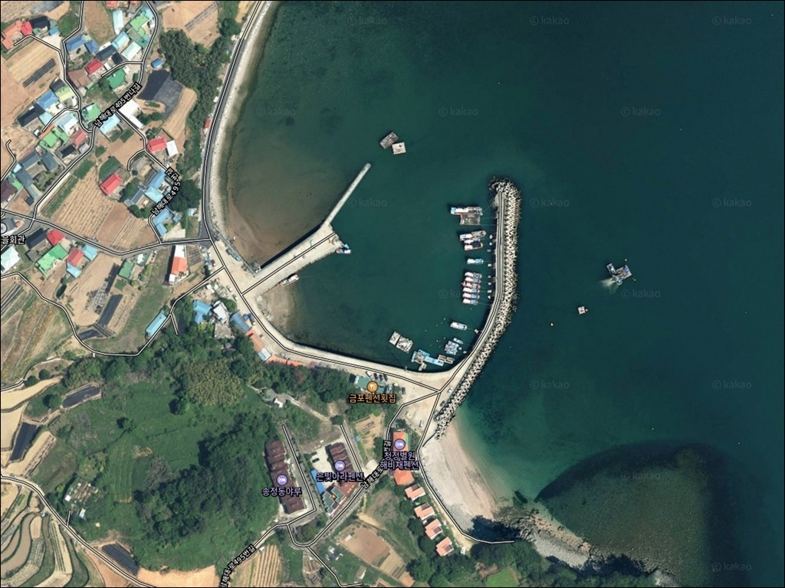
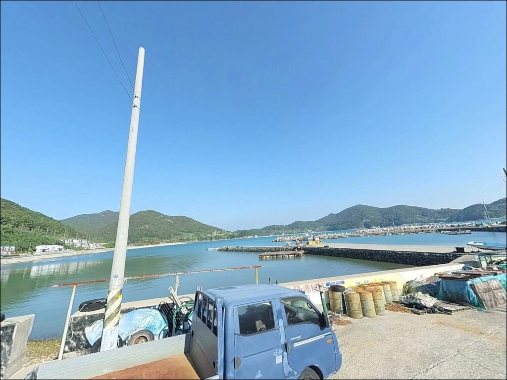
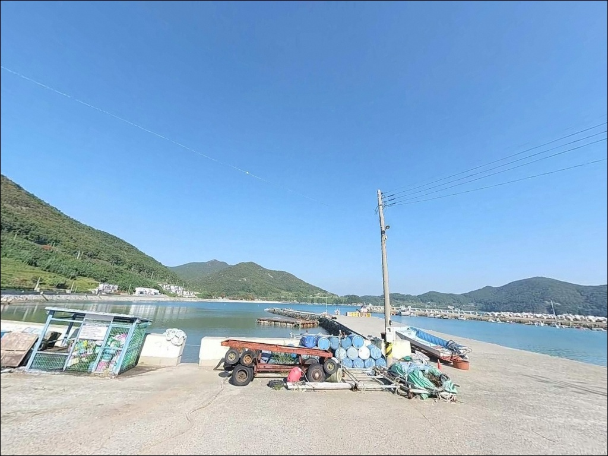
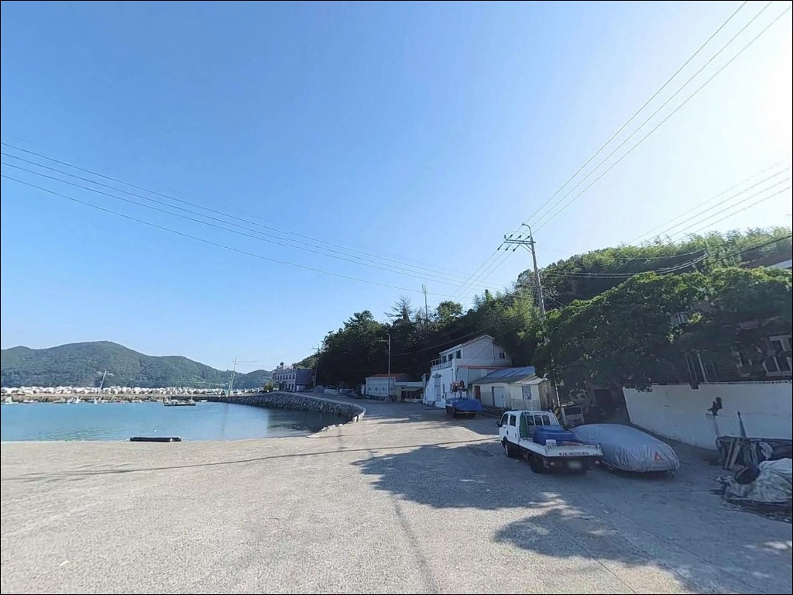
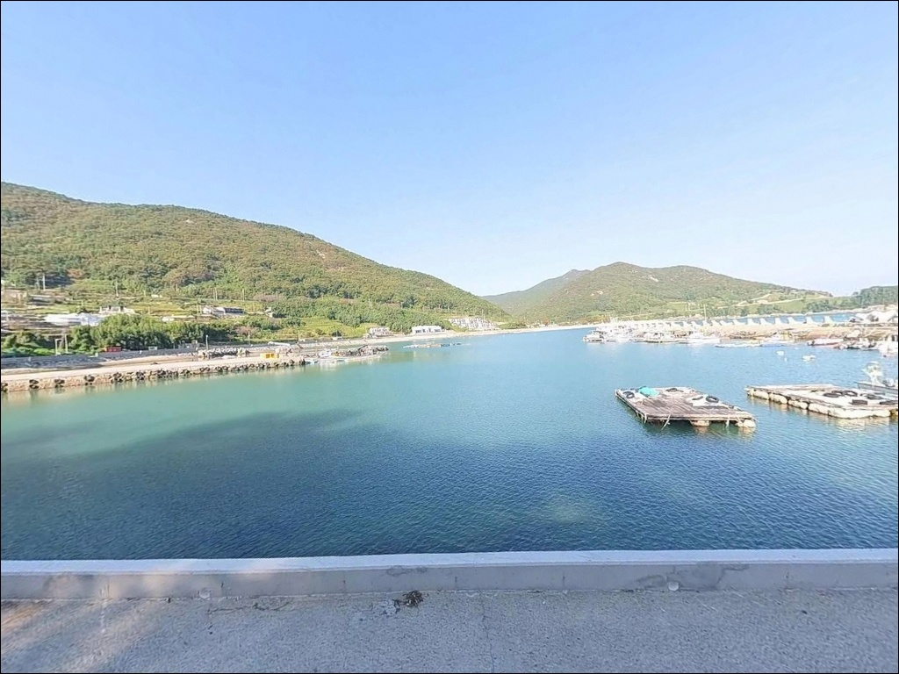
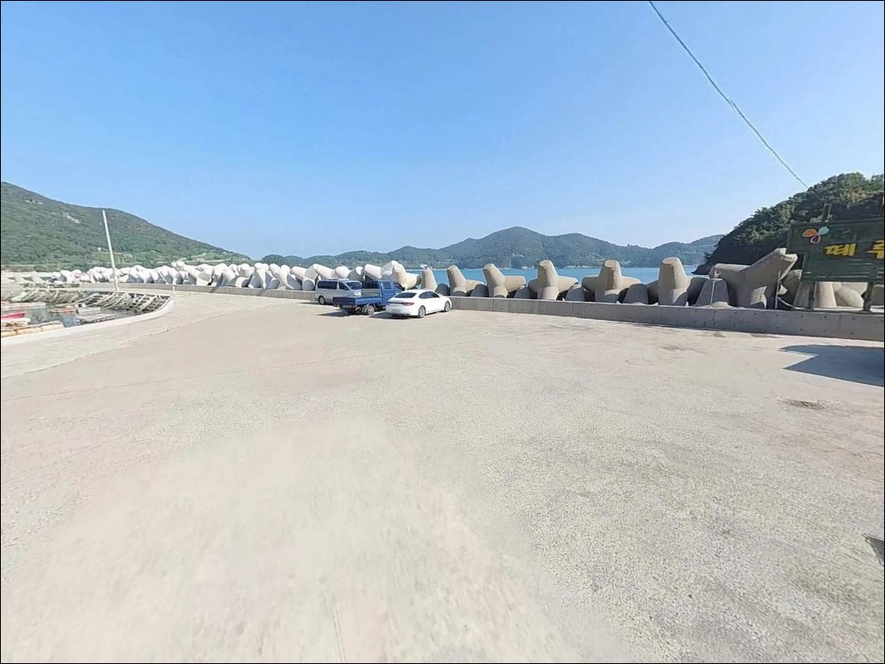
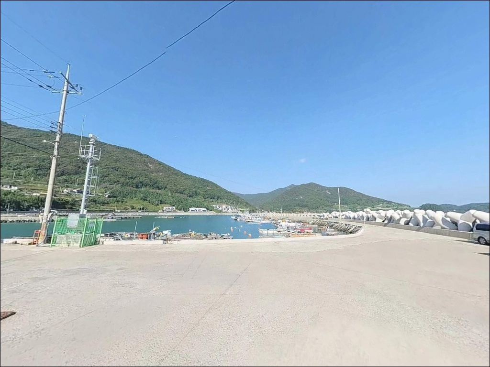
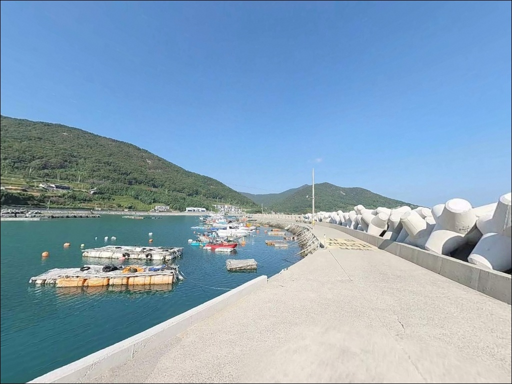
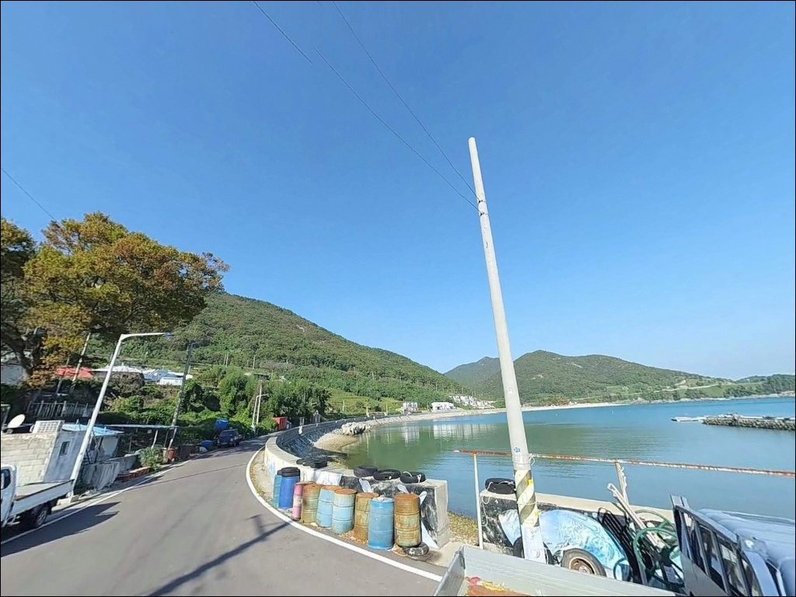

내항에 자리 잡으면 손해인 상주리방파제, 외항 끝단 수심 7m 조류에서 갈린 조과


포인트 안내
상주리방파제
경남 남해군 상주면 상주리 128-5
상주 은모래비치 방면에서 진입하면
넓은 주차 공간이 먼저 눈에 들어오고,
내항 석축이 접근하기 쉬워 보입니다.
그런데 이 포인트의 핵심은 외항 끝단이며,
내항 쪽 모래 바닥과 외항 테트라포드 구간은
낚시 여건 자체가 다릅니다.
이 글은 상주리방파제의
진입 동선, 자리 선정 기준, 차박 여건,
낚시 방식별 공략 조건에 집중합니다.
조황 단정이나 특정 어종 보장은
이 글의 범위에 포함되지 않습니다.

1. 진입 동선과 포인트 접근성
상주리방파제는 상주 은모래비치 해변 도로를 통해
진입하는 구조입니다.
왕복 2차선 포장도로로 이어져 있어
캠핑카, 카라반 등 대형 차량도
진입에 큰 어려움이 없는 편입니다.
방파제 입구까지의 접근성 자체는
남해 방파제 중 상위권 수준입니다.
방파제 초입부에 광장형 주차 공간이 확보되어 있어
주차 후 도보로 방파제에 오르는 동선이 자연스럽습니다.
항구 내 부지가 넓어 회차도 여유 있게 가능합니다.
다만 L자로 꺾이는 방파제 구조상
외항 끝단까지는 도보 이동이 필요한 거리이므로
장비는 꼭 필요한 것만 챙기는 편이 좋습니다.
남해양식연구센터 방파제 구간은
방파제 위 차량 진입이 제한됩니다.
입구 근처에서 하차 후
도보로 300m 안팎을 내려가는 방식으로
접근하는 것이 일반적입니다.

2. 차박 환경과 야간 체류 여건
상주리방파제 인근은 상주 은모래비치를 중심으로
펜션, 캠핑장, 숙박시설이 밀집한 관광지 구조입니다.
어항 시설과 관광지 조명이 겹쳐
야간에도 기본 조도가 확보됩니다.
시야 확보 면에서는 남해 방파제 중
안전성이 높은 편에 속하는 환경입니다.
반면 완전한 고립 환경과는 거리가 멉니다.
주말이나 성수기에는 차량 통행과 인파가
꾸준히 이어지는 곳입니다.
조용히 하룻밤 머무는 스텔스 차박보다는
편의성을 중시하는 출조 베이스로
활용하는 쪽이 이 포인트에 맞습니다.
방파제 끝단은 야간 조명 범위에서 벗어납니다.
외항 테트라포드 구간에서 야간 낚시를 할 경우
개인 헤드랜턴과 집어등은 필수이며,
파도가 방파제를 넘을 수 있는 기상 조건에서는
즉시 대피하는 판단이 우선입니다.


3. 주변 편의시설 및 인프라 현황
상주 은모래비치 입구 일대에
CU, GS25 등 편의점이 도보 5분 거리 내에 있습니다.
하나로마트와 소형 식당도
이 구간에서 해결됩니다.
식수·얼음·간식은 현장 주변에서
조달이 가능한 수준입니다.
공중화장실은 상주항 인근과
해수욕장 구역 내에서 이용 가능합니다.
상주면 소재지 쪽으로 조금 더 이동하면
우체국, 보건지소, 소규모 마트 등
생활 인프라도 갖춰져 있습니다.
낚시점, 횟집, 카페 등 관광 편의시설이
해수욕장 방면에 집중되어 있어
남해 방파제 포인트 중
인프라 접근성은 최상위 수준입니다.
비수기 일부 시설은 운영 여부를
방문 전 확인하는 편이 좋습니다.

4. 방문 전 반드시 챙겨야 할 준비사항
상주리방파제는 외해에 직접 노출되는
방파제 끝단을 핵심 포인트로 삼는 구조입니다.
방문 전 가장 먼저 확인해야 할 것은
기상청 해상 예보입니다.
파고 1.5m 이상 시에는 외항 접근을
삼가는 판단이 기본이며,
파도와 바람 방향이 낚시 자리 선정의 전제가 됩니다.
조류 흐름이 꾸준한 포인트인 만큼
바다타임에서 상주면 인근 물때를 확인하고
조류가 살아 있는 타이밍을 맞추는 것이
찌낚시와 에깅 모두에 유리합니다.
간조·만조 전후 수위 변화가 확실한 해역이라
갯바위 이동 시 퇴로 확보가 최우선입니다.
외항 테트라포드 구간은
구조물 크기가 크고 간격이 있어
발을 잘못 딛으면 위험합니다.
구명조끼와 미끄럼 방지 신발은
선택이 아니라 기본 장비입니다.
어선 입출항이 잦은 항구이므로
어민 작업 동선과 계류 로프에
채비가 닿지 않도록 주의해야 합니다.

5. 외항 끝단에서 조류가 달라지는 이유
상주리방파제의 지형 특성을 이해하려면
먼저 승치도(세존도)를 기억해야 합니다.
방파제 정면에서 약 700m 거리에 위치한 이 섬과
방파제 사이에 형성된 수로가
조류 흐름을 집중시키는 핵심 구간입니다.
L자로 꺾이는 방파제 구조에서
꺾이는 지점부터 끝단까지가
이 조류의 영향을 가장 직접적으로 받습니다.
수심은 외항 끝단 기준 7~10m로 깊은 편이며,
내항 쪽은 모래 바닥으로 이어지는
2~4m 수준의 얕은 수심 구간입니다.
외항 테트라포드 아래로는 암반과 구조물이
어우러진 여밭 성격의 바닥이 형성되어 있어
어류 은신처와 먹이 활동 구간이
자연스럽게 갖춰진 지형입니다.
바닥 상태는 외항 정면 기준으로
수중 암초와 모래가 혼재한 구조입니다.
채비를 멀리 보낼수록 밑걸림 빈도는 줄어들고
조류 흐름을 타는 구간이 살아납니다.
출조 전 상주 방파제 일대 조황을
꼭 별도로 검색해 최신 정보를 확인하시기 바랍니다.


6. 포인트 지형에 맞는 낚시 스타일
이 포인트에서 가장 어울리는 낚시는
에깅입니다.
남해안 대표 갑오징어·무늬오징어 포인트로
정평이 난 곳으로,
L자로 꺾이는 지점부터 끝단까지
외항 방향으로 에기를 운용하는 방식이
이 방파제 구조에 가장 잘 맞는 접근법입니다.
봄부터 12월까지 시즌 폭이 넓은 편입니다.
릴찌낚시도 외항 끝단에서 적극적으로 시도할 수 있습니다.
승치도 수로 방향으로 채비를 흘리는 방식으로
이 해역에서 기대해 볼 수 있는 어종은
감성돔, 벵에돔, 볼락입니다.
가을부터 겨울 사이에
테트라포드 끝바리 구간이 주 포인트가 됩니다.
볼락 라이트게임은 야간 시간대에 유효합니다.
가로등 조명이 수면에 비치는 내항 주변과
외항 테트라포드 틈새를 소형 지그헤드와 웜으로
천천히 탐색하는 방식이 어울립니다.
집어등을 병행하면 효과가 더 살아납니다.
원투낚시는 내항~외항 초입 구간에서
모래 바닥을 겨냥해 운용합니다.
도다리, 보리멸, 붕장어 계열이
이 일대 모래 바닥에서 기대해 볼 수 있는 어종입니다.

7. 대안 포인트와 플랜 B 동선
상주리방파제가 혼잡하거나
파도 영향으로 외항 진입이 여의치 않을 때는
두모방파제가 첫 번째 대안입니다.
상주리방파제에서 약 1.4km 거리로
가로등과 석축이 갖춰진 구조이며,
야간 접근성이 좋고 볼락 마릿수 조황이
꾸준하게 보고되는 포인트입니다.
홍현리방파제는 상주리방파제에서
약 4.7km 거리에 위치합니다.
남해도 남부 해역 기준으로
감성돔 포인트로 낚시 커뮤니티에서 언급되는 곳으로,
몰밭이 발달한 외해 구조를 갖추고 있어
릴찌낚시 중심으로 공략해 볼 수 있는
추가 선택지입니다.
차량으로 15분 거리의 미조항은
국가어항으로 규모가 있는 낚시 인프라와
수산시장이 갖춰진 곳입니다.
상주리방파제를 처음 찾는다면
미조항을 기점으로 잡고
돌아오는 길에 상주리 일대를 병행 탐색하는
동선도 효율적인 선택입니다.

외항 끝단을 알면
상주리방파제가 달라 보입니다
에깅, 릴찌낚시, 볼락 라이트게임을
복합으로 운용하고 싶은 낚시인이라면
상주리방파제의 지형 조건은
잘 맞는 구조입니다.
수심 깊은 외항과 테트라포드 여밭,
승치도 수로가 만드는 조류 흐름은
다양한 낚시 스타일이 공존할 수 있는
여건을 갖추고 있습니다.
반면 내항 모래 바닥에만 자리를 잡거나
조류 타이밍을 맞추지 않고 진입하면
이 포인트의 강점을 제대로 활용하지 못합니다.
외항 끝단 자리 선점, 물때 사전 확인,
기상 예보 체크, 이 세 가지가
상주리방파제 출조를 결정하는 기준입니다.
해수욕장 인프라와 낚시 여건을 동시에 누릴 수 있는
드문 포인트이니,
상주 은모래비치 관광 일정과 낚시를
함께 묶어 비수기 평일에 찾는다면
여유 있는 출조가 될 수 있는 곳입니다.